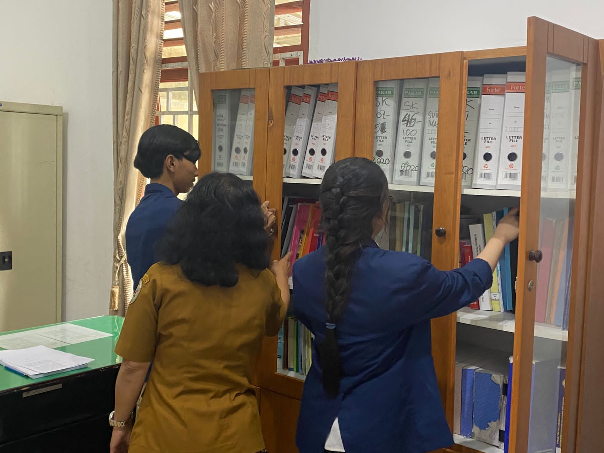
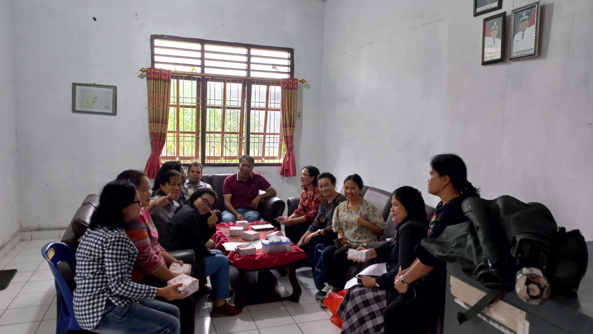
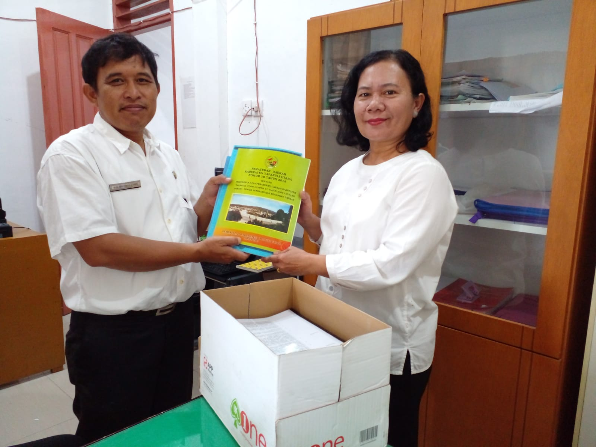
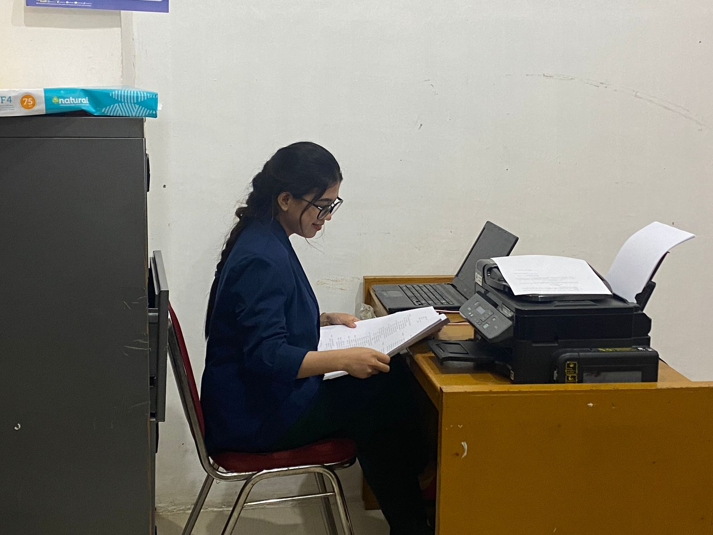
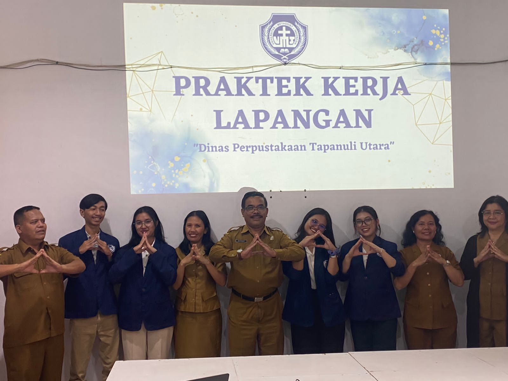

Perpustakaan dan Arsip Tapanuli Utara



Previous
Next
Kegiatan Dinas Perpustakaan Dan Arsip
Tapanuli Utara

Praktek Kerja Lapangan Universitas Methodist Indonesia

PRAKTEK KERJA LAPANGAN MAHASISWA UNIVERSITAS METHODIST INDONESIA
KUNJUNGAN DI RUANG ARSIP DINAS PERPUSTAKAAN TAPANULI UTARA